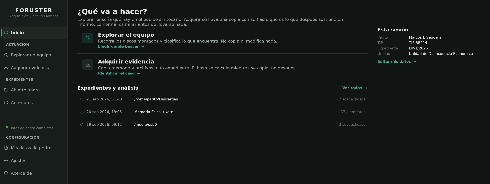

Foruster adquiere la memoria y el almacenamiento de un equipo en funcionamiento, y deja un expediente que un tercero puede verificar.

La información que solo existe en memoria desaparece al apagar el equipo.
Primero la memoria volátil; después, el almacenamiento que selecciones. Foruster abre los soportes en solo lectura, de modo que el equipo queda tal y como lo encontraste.
Cada elemento lleva su hash SHA-256, calculado durante la copia y no al terminarla. Si el elemento se altera después, el hash deja de coincidir.
Lo que no se pudo adquirir íntegramente consta en el informe con su motivo. Un expediente parcial jamás se presenta como completo.
Si la otra parte impugna la evidencia, puede comprobar por sus propios medios que el expediente no ha sido alterado desde su cierre. No necesita instalar Foruster ni dar por buena ninguna afirmación nuestra.
La documentación detalla qué se adquiere, cómo se verifica y qué queda fuera del alcance.